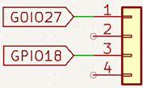
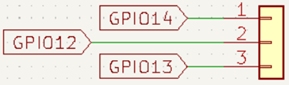
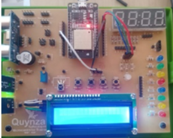

Objetivo. Usar combinaciones de presión de dos pulsadores para controlar el color de un LED RGB.
Procedimiento.
-
Conectar dos pulsadores a los pines GPIO27 y GPIO18.

-
Conectar el LED RGB a los pines GPIO14 (rojo), GPIO12 (verde) y GPIO13 (azul) mediante
resistencias limitadoras.


-
Programar la lógica para que:
- Solo pulsador 1 encendido → LED rojo.
- Solo pulsador 2 encendido → LED verde.
- Ambos pulsadores encendidos → LED azul.
- Ninguno encendido → LED apagado.
import machine import time Pulsador1 = 27 Pulsador3 = 18 RGB_R = 14 RGB_G = 12 RGB_B = 13 Pulsa1 = machine.Pin(Pulsador1, machine.Pin.IN) # Button pin Pulsa3 = machine.Pin(Pulsador3, machine.Pin.IN) # Button pin led_R = machine.Pin(RGB_R, machine.Pin.OUT) # LED pin led_G = machine.Pin(RGB_G, machine.Pin.OUT) # LED pin led_B = machine.Pin(RGB_B, machine.Pin.OUT) # LED pin # Entra en un ciclo de 10 segs time1 = time.ticks_us() during = 0 while during <= 10000000: time2 = time.ticks_us() during = time.ticks_diff(time2, time1) # Si se presiona pulsador 1 y no se presiona pulsador 2 se ilumina el LED en rojo if Pulsa1.value() and not Pulsa3.value(): # Turn on the LED by setting its value to 1 led_R.value(1) led_G.value(0) led_B.value(0) time.sleep(2) # Si no se presiona pulsador 1 y se presiona el pulsador 2 se ilumina el LED en verde elif not Pulsa1.value() and Pulsa3.value(): led_R.value(0) led_G.value(1) led_B.value(0) time.sleep(2) elif Pulsa1.value() and Pulsa3.value(): # Si se presiona el pulsador 1 y se presiona el pulsador 2 a la vez se ilumina el LED en azul led_R.value(0) led_G.value(0) led_B.value(1) time.sleep(2) else: # El LED deja de iluminar led_R.value(0) led_G.value(0) led_B.value(0) time.sleep(0.5)
Actividades sugeridas.
- Cambiar la combinación de pines y pulsadores usados.
- Modificar el código para que se utilicen tres pulsadores y asignar colores diferentes a cada combinación posible.
- Cambiar los tiempos de encendido y apagado.
- Probar el código con pulsadores 2 y 4 en lugar de 1 y 3.
- Guardar el programa en el microcontrolador y ejecutarlo sin conexión al PC.